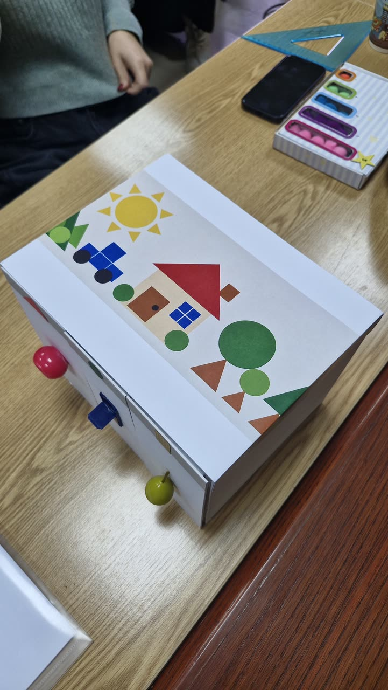

Principi univerzalnog dizajna
Dizajn počinje
od čoveka.
Različite ruke, potrebe i načini života. Kroz skice, predmete i susrete istražujemo kako dizajn može da otvori više mogućnosti.
Pogledaj šta radimo ↗4 održana časa · 13 ideja
 obojilicaAnja Bukurović85/246 slika ↗
obojilicaAnja Bukurović85/246 slika ↗
taktilna kutijaKsenija Kočić19/247 slika ↗ padalicaIvana Cvetković161/244 slika ↗
padalicaIvana Cvetković161/244 slika ↗Iz naše učionice · skice postaju predmeti.
Poslednji čas · 23.10.2026
Prototip u rukama korisnika — četvrti čas
Rad na prototipovima je nastavljen: razrada, dokumentovanje i testiranje. Na spisku časa stoji 27 prisustava, a 21 rad je fotografisan — ukupno 87 fotografija.
Otvori zapis časa →Sveska koja raste.
Jedan horizontalni A3 list svake nedelje, štampan i digitalan. Skice, mere i otkrića postaju tvoja radna sveska.
Predmet i radna sveska →Sledeća nedelja: —Principi univerzalnog dizajna — radna sveska
A3 horizontalna radna sveska · štampana + digitalna · 2026/2027
- Ime i prezime / Name
- Tim / Team
- Fakultet / Faculty
- Fakultet za graditeljski menadžment, Univerzitet „Union — Nikola Tesla”, Beograd
- Broj listova / Sheets
Svaka nastavna nedelja dodaje jedan list. Sveska se predaje na kolokvijumu/ispitu u formatu iznad.